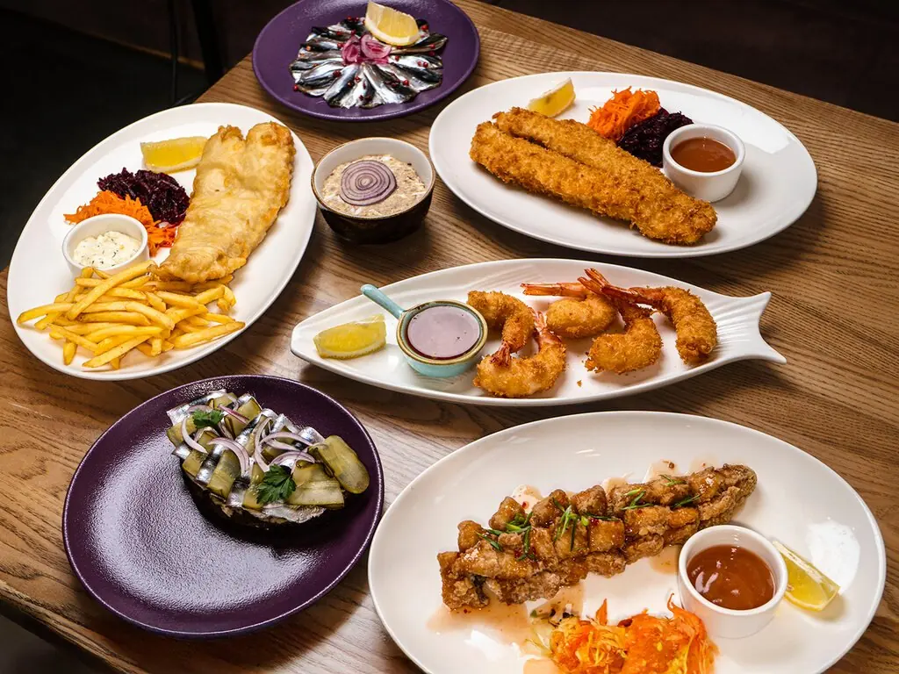
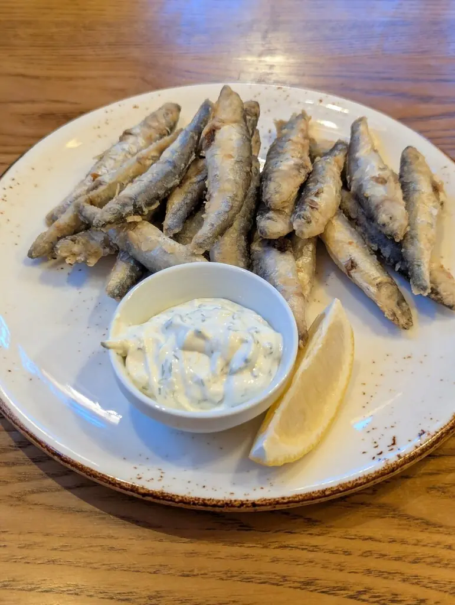
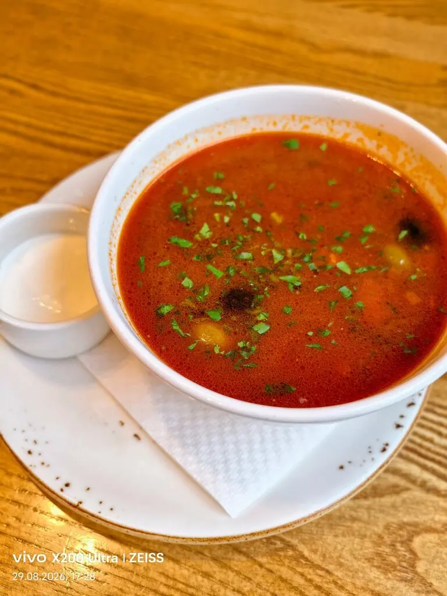
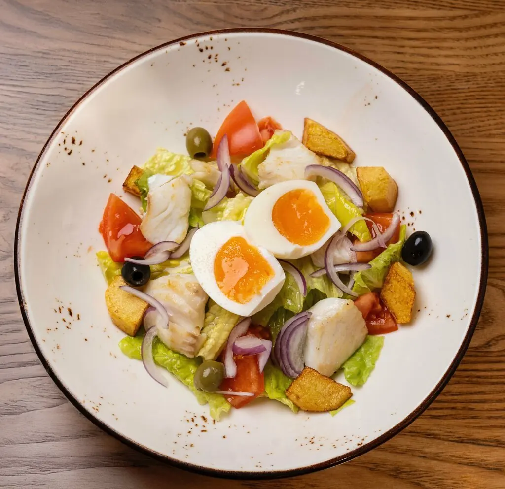
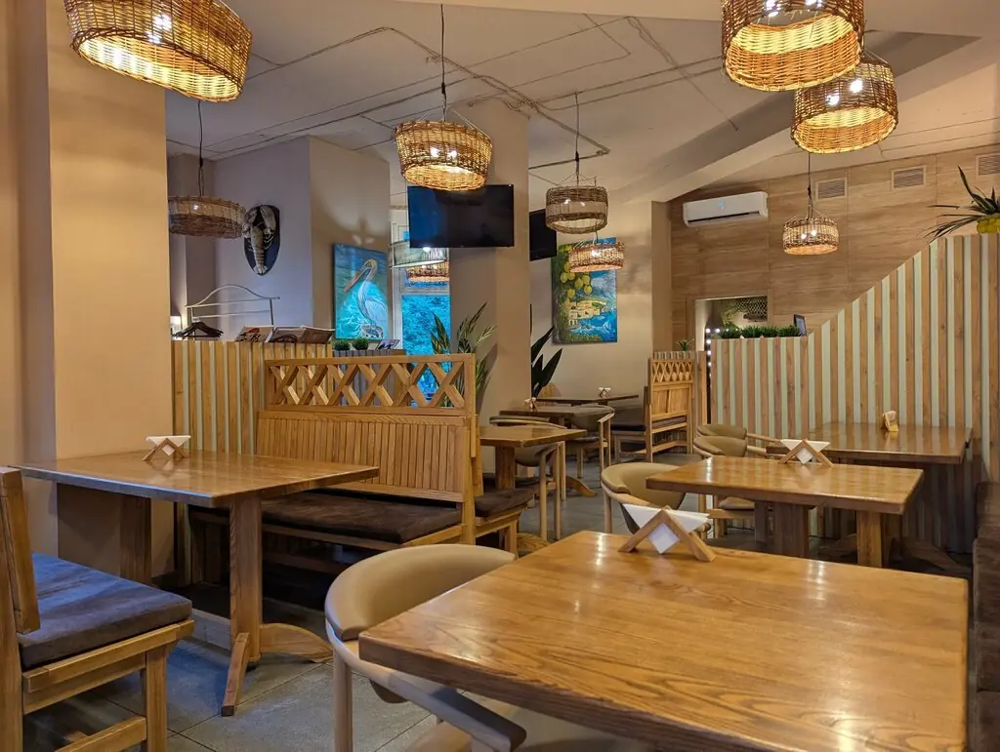

БАЛТИКА · КУРС НА РЫБУ
Тресковия
Маленькое рыбное бистро на Космонавта Леонова: балтийская корюшка, килька и тартары, с которых не хочется отвлекаться.
5,0 · 1143 оценки

Маршрут по меню
N
Из Балтики во фритюр
Балтийская корюшка640 ₽
Балтийская килька380 ₽
Фиш-стики в темпуре450 ₽
Чёрный императорский хлеб75 ₽
E
Сырое и свежее
Тартар из тунца с авокадо710 ₽
Тартар из форели со сливочным сыром725 ₽
Тартар из пеламиды495 ₽
S
На берег
Картофель запечённый185 ₽
Картофельное пюре185 ₽
Чизкейк с лимоном390 ₽
Часть меню с Яндекс Карт, цены уточняйте у официанта.




Судовой журнал
Очень понравился судак в кисло-сладком соусе, интересная подача.Михаил Иванов
Вкусная еда, большие порции. Рекомендую любителям рыбы.Наталья Сопина
Уютное место и очень вкусная еда.Ксения Останина